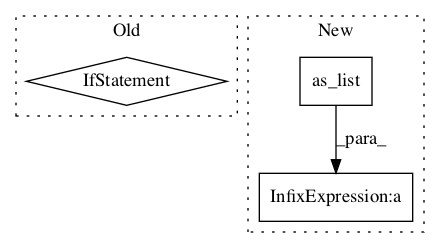

4421754f9886233e90563eb8088348bb36024095,niftynet/layer/loss_segmentation.py,LossFunction,layer_op,#LossFunction#Any#Any#Any#,46
Before Change
batch_size = ground_truth.get_shape()[0].value
ground_truth = tf.reshape(ground_truth, [batch_size, -1])
if weight_map is not None:
weight_map = tf.reshape(weight_map, [batch_size, -1])
// assumes same gt and weight across scales
// prediction should be a list for multi-scale losses
// single scale ``prediction`` is converted to ``[prediction]``
if not isinstance(prediction, (list, tuple)):
prediction = [prediction]
data_loss = []After Change
// size: (n_voxels, num_classes)
// if the ground_truth has only one channel, the shape
// becomes: (n_voxels,)
spatial_shape = pred_b .get_shape().as_list()[:-1]
ref_shape = spatial_shape + [-1]
ground_truth_b = tf.reshape(ground_truth[b_ind], ref_shape)
if ground_truth_b.get_shape().as_list()[-1] == 1:
ground_truth_b = tf.squeeze(ground_truth_b, axis=-1)
if weight_map is not None:In pattern: SUPERPATTERN
Frequency: 3
Non-data size: 3
Instances Project Name: NifTK/NiftyNet
Commit Name: 4421754f9886233e90563eb8088348bb36024095
Time:
Author: null
File Name: niftynet/layer/loss_segmentation.py
Class Name: LossFunction
Method Name: layer_op
Project Name: NifTK/NiftyNet
Commit Name: 29bb1d395f6caf76b8318a1c72ace753ad98f30c
Time:
Author: null
File Name: niftynet/layer/upsample_res_block.py
Class Name: UpBlock
Method Name: layer_op
Project Name: NifTK/NiftyNet
Commit Name: 135a56e0935fbb04811f8ce7b9f514f498212f71
Time:
Author: null
File Name: niftynet/layer/crf.py
Class Name:
Method Name: ftheta